九大职业27天赋洗牌，猎人近战兽王、战士防战封神，练级效率翻倍。
猎人：近战兽王称王
猎人练级唯一答案是近战兽王猎。放弃纯远程输出，装备双手武器或双持附魔灼热的单手剑/匕首，战斗时保持野兽守护，挂毒蛇钉刺后直接冲上去肉搏，人宠合一协同爆发极其夸张，低等级也能轻松割草。
只有偶遇灼热弓等极品远程武器时才值得切回远程过渡。
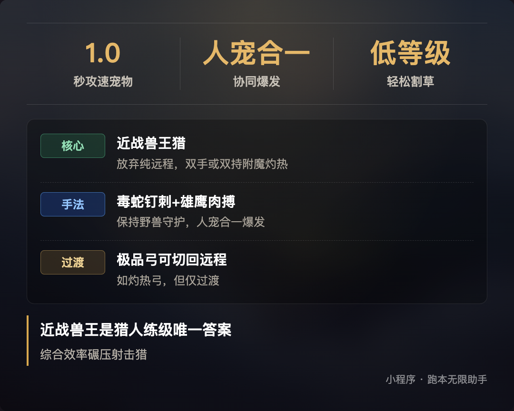
战士：防战封神
暴雪彻底改写了战士练级历史，防护战士成为最安全安逸的练级机器。点出强化复仇和防御大师，每次躲闪或招架都能白嫖怒气，配合遗产天赋无限回复，野外能同时抗住6-7个怪，全程不用坐地板。
操作极简，把复仇、盾牌格挡、盾牌猛击绑进一个宏无脑按，副本秒进组还能打输出第一。
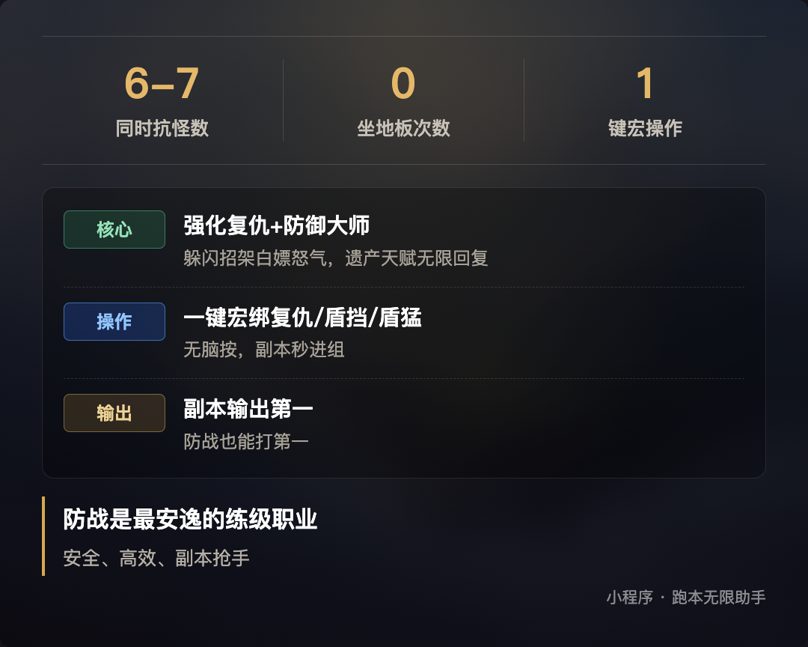
圣骑士：40级转防骑
1-40级走惩戒骑，点出正义追击加移速；40级后立刻洗防护圣骑士，去拍卖行淘法伤绿装，给盾牌装盾刺，点出神圣之盾和以盾为是，几乎无休息时间。
防骑还能把透明治疗药水当水喝，用纯净术驱散疾病负面，续航能力拉满。
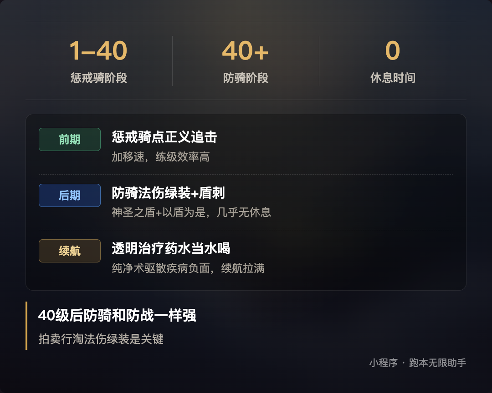
盗贼：战斗贼最稳
盗贼唯一答案是战斗贼。拥有全专精最强AOE，每2分钟一次的剑刃乱舞轻松应对多怪，疾跑和闪避冷却缩短60%大幅提升容错。
核心神技还击不占公共冷却且只需10点能量，招架后白打一发高伤害，绑进邪恶攻击宏里白嫖输出。
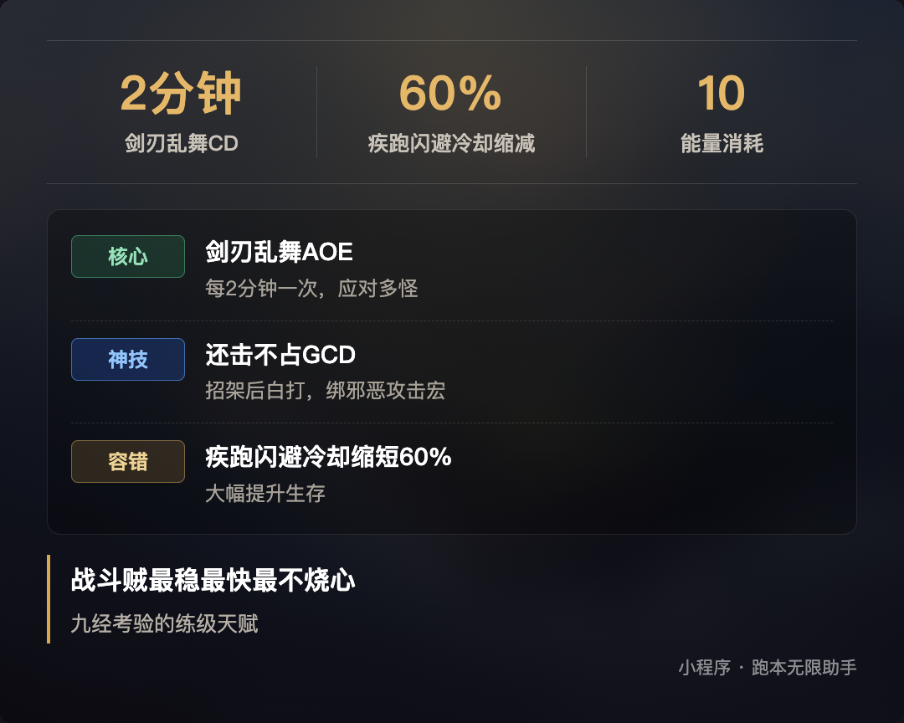
德鲁伊：野德猫形态
平衡德杀一只怪要18-20秒，节奏太慢；穿敏捷耐力装的野德猫形态杀怪只需8-10秒，效率翻倍。
野外精英任务轻松单刷，急需进本时切熊形态客串坦克秒进组。
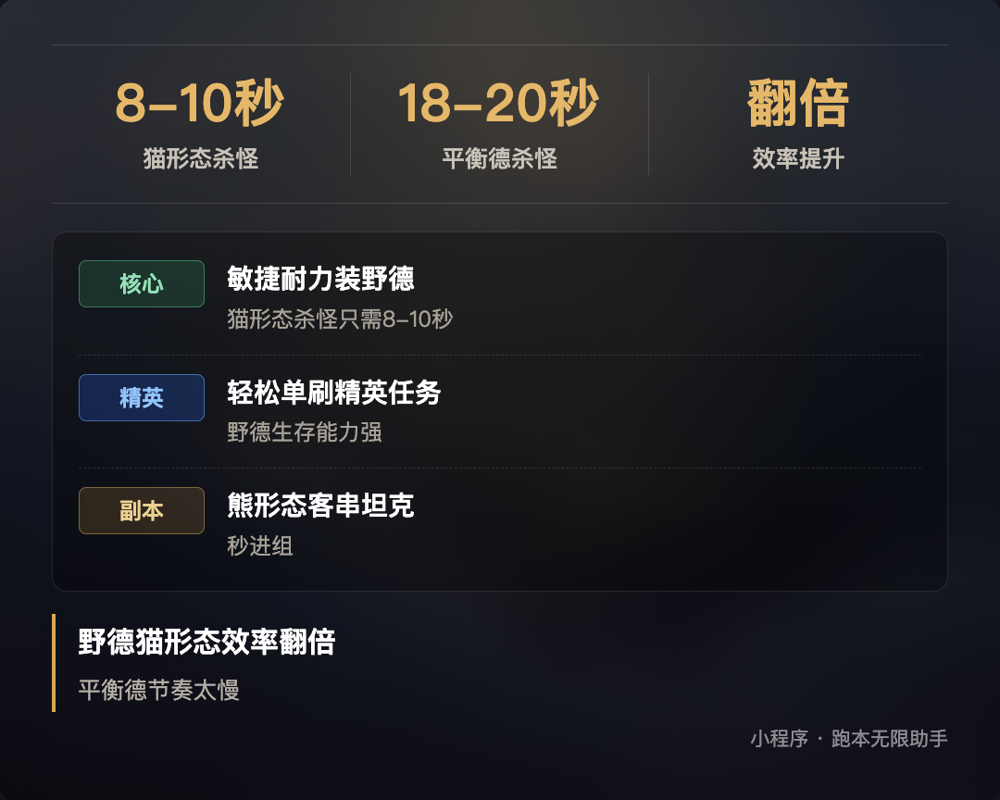
萨满：增强萨唯一真神
萨满练级唯一答案是增强萨，千万别碰元素萨，否则大半青春浪费在坐地板喝水上。
增强萨有无数极品双手武器支撑，打击感与效率兼备，甚至可用增强坦克天赋拿双手武器练级，背包常备治疗装随时客串治疗秒进副本。
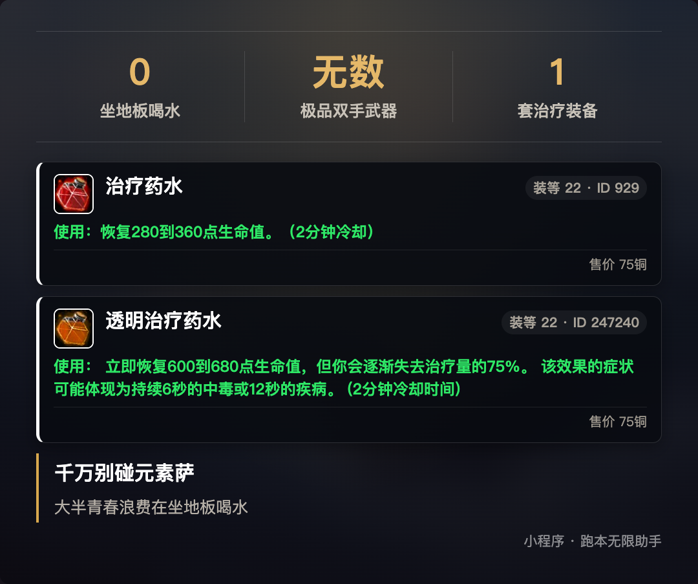
法师：奥法爆发最猛
法师三系练级都不弱，但公认练级速度最快、爆发最猛的是奥法。奥法可以清晰蓝条瞬间融化单体目标，蓝耗控制优秀，群拉AOE更是天花板级别。
冰法稳健但效率不如奥法。
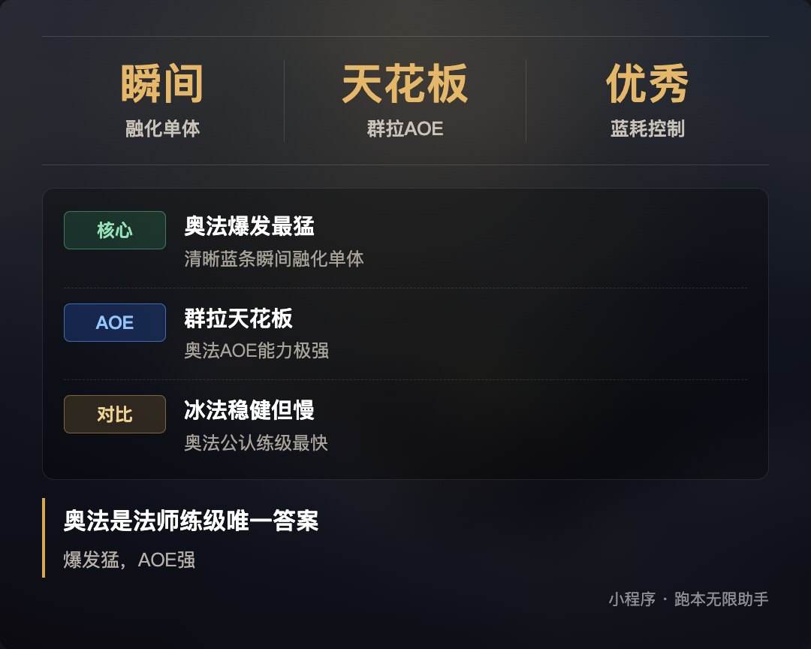
术士：痛苦或恶魔
追求急速选痛苦术，依靠生命虹吸、痛苦灾祸加快持续伤害跳伤频率，配合暗影掌握增伤，吸取生命和生命分流无限循环，拉怪之间零休息，像永动机一样。
追求安逸选恶魔术，尤其在PVP服务器，宠物扛怪让你永远满血，随时最佳迎战状态。千万别玩毁灭术，装备凑不出法伤纯属折磨。
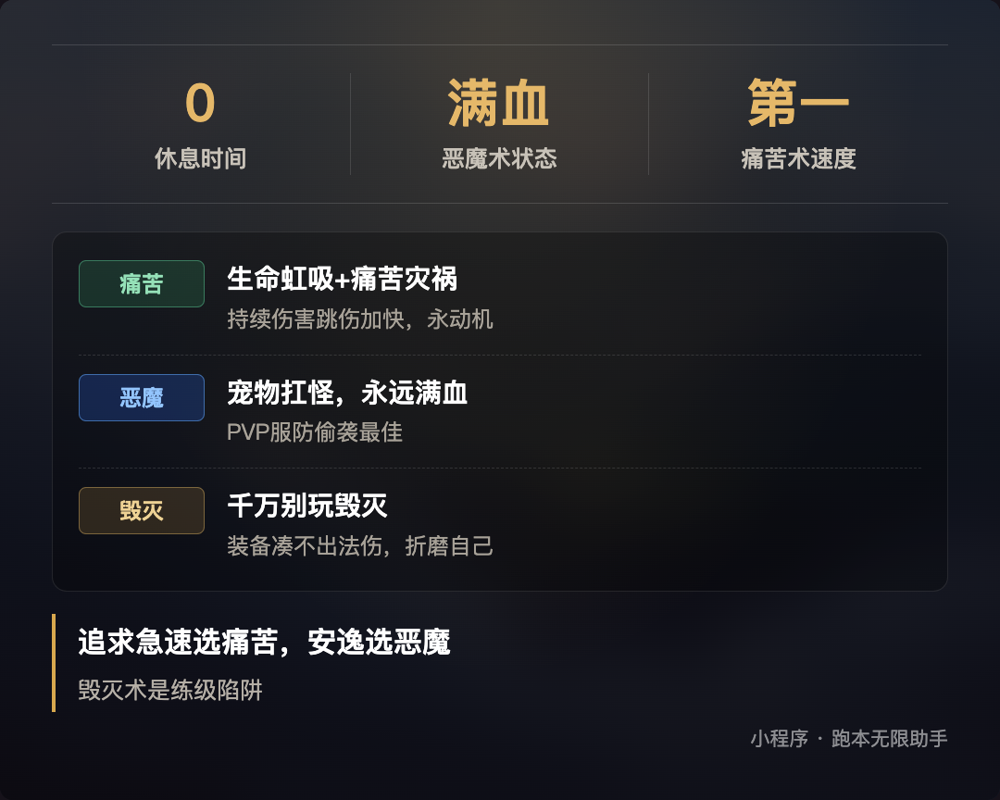
牧师：40级后暗牧
牧师练级唯一答案是40级后暗影牧师。虽然暴雪在11月16日把吸血鬼的拥抱小队治疗效果从20%砍到10%，但暗牧野外单刷王者的地位丝毫未动摇。
1-40级过渡期走戒律路线，点出苦修和冥想回蓝，配合暗影系精神分流用魔杖平稳推进；40级后切暗影形态一路平推，同时开启双天赋背治疗专精，野外单刷副本秒进两不误。
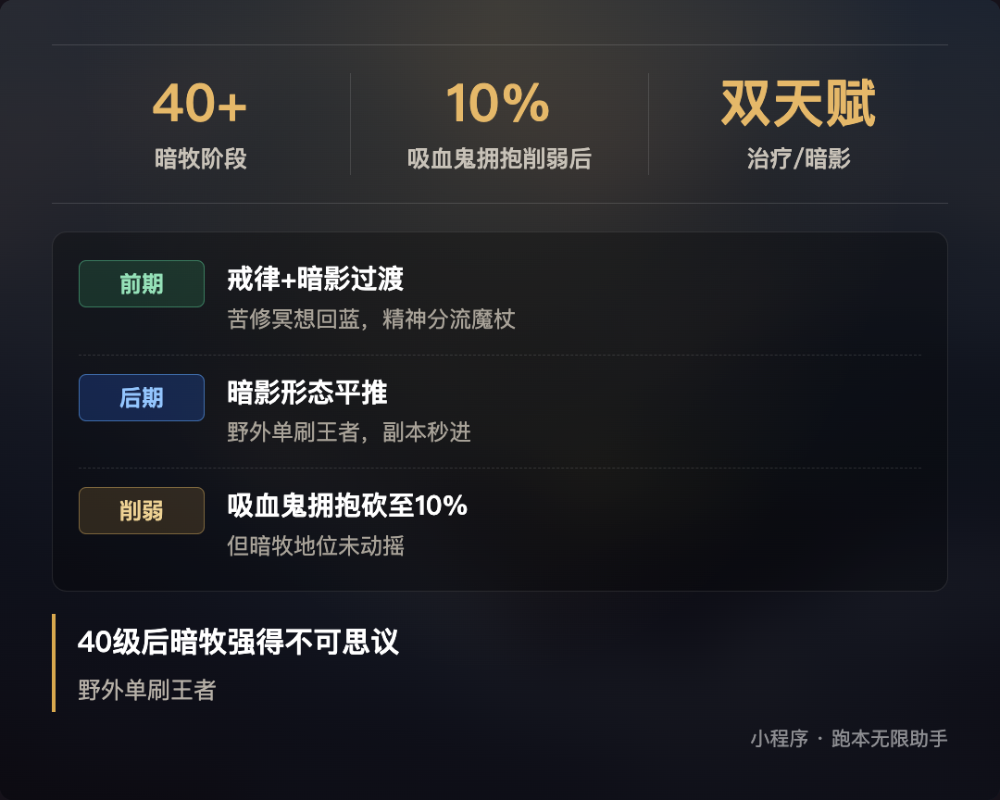
推荐天赋加点（模拟器实图）
战士：武器 4 / 狂怒 16 / 防护 31；关键深层天赋：怒击(1/1)、破釜沉舟(1/1)、强化破甲攻击(3/3)、先锋(1/1)、震荡猛击(1/1)。
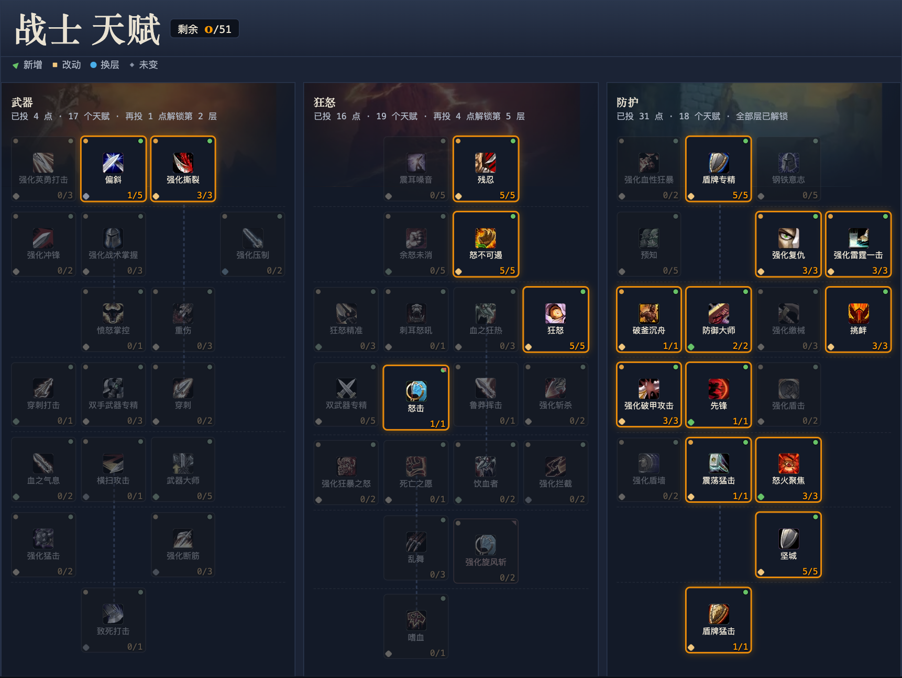
模拟器加点代码：?c=warrior&p=01300000000000000-0505000501000000000-050033120331001351
牧师：戒律 13 / 神圣 3 / 暗影 35；关键深层天赋：精神鞭笞(1/1)、黑暗启发(5/5)、吸血鬼的拥抱(1/1)、暗影之波(3/3)、沉默(1/1)。
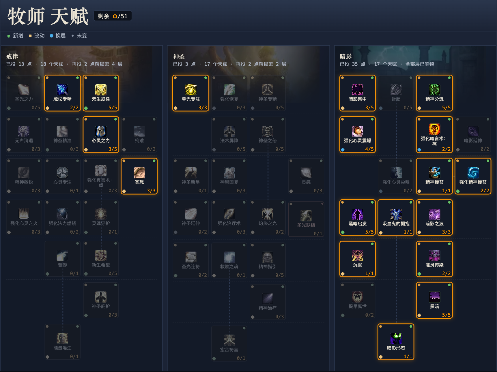
模拟器加点代码：?c=priest&p=025003000030000000-30000000000000000-30542001251312051
圣骑士：神圣 0 / 防护 35 / 惩戒 16；关键深层天赋：圣殿骑士壁垒(1/1)、迅捷审判(1/1)、强化正义之怒(3/3)、预知(5/5)、神圣之盾(1/1)。
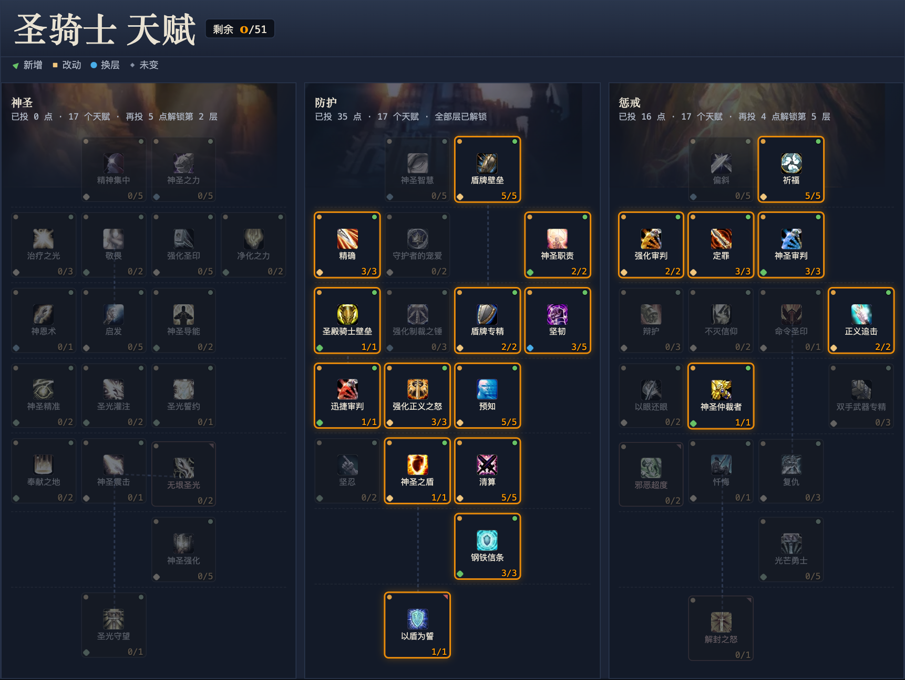
模拟器加点代码：?c=paladin&p=00000000000000000-05302102313501531-05233000201000000
注：以上天赋图基于视频实机画面于「跑本无限助手」天赋模拟器校验还原并截取加点面板，过路点可根据自身装备与升级习惯微调。
九职天赋，
各有千秋，
选对路线，
练级无忧。
注：本文整理自公开视频与社区分享，具体数值与机制请以游戏内实装与官方公告为准。
资料与数据核对来源
一起玩魔兽(一条大菜狗） · 抖音视频数据 · 2026-11-21
本站无限服真源数据库（wow-forever-web/app/data/）
微信小程序：跑本无限助手（副本手册、配装与宏命令）
跑本无限助手 ｜ 无限服攻略
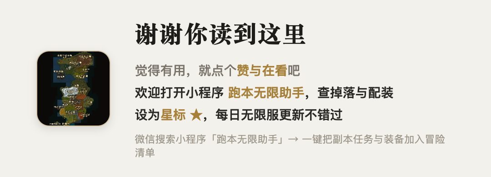